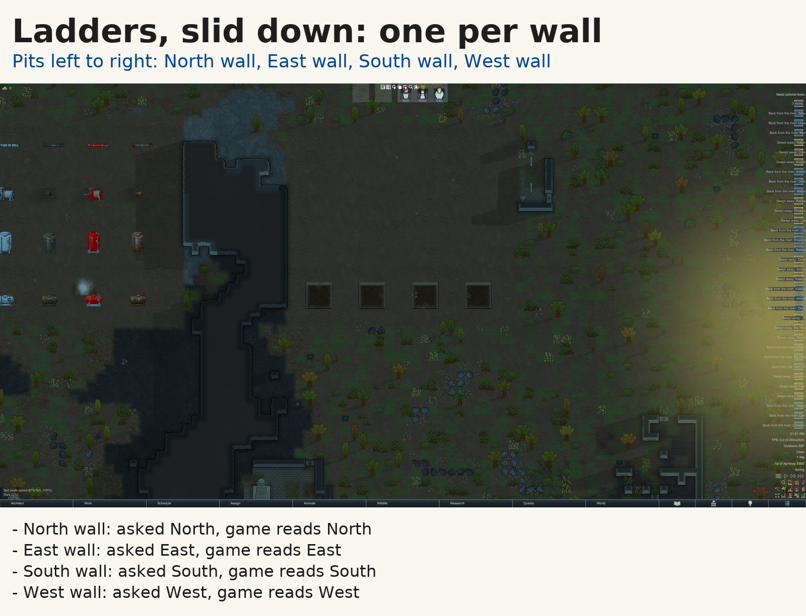
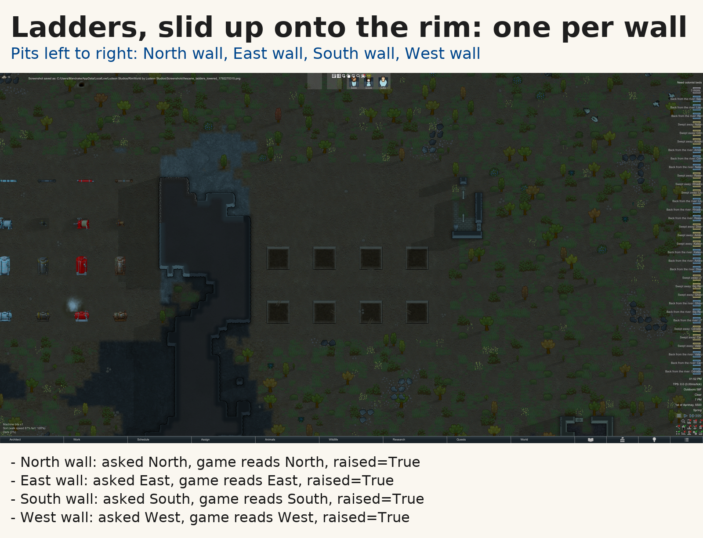
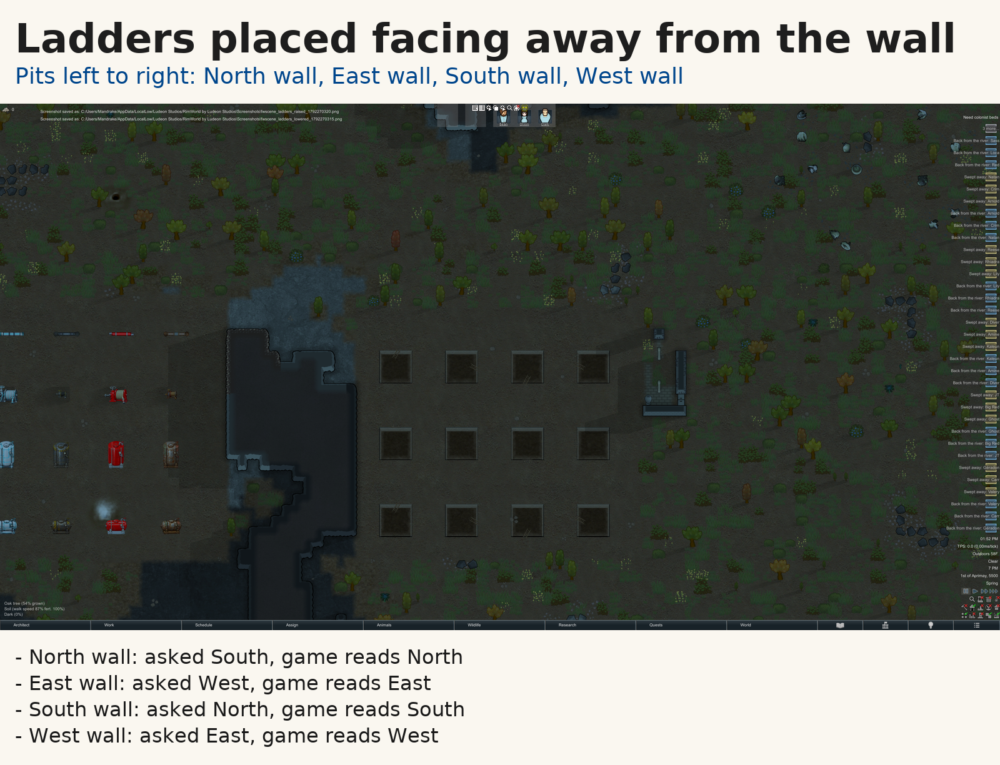
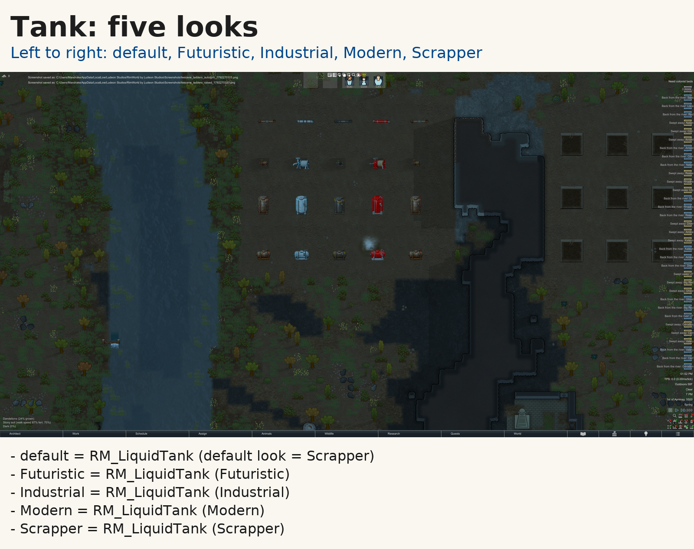
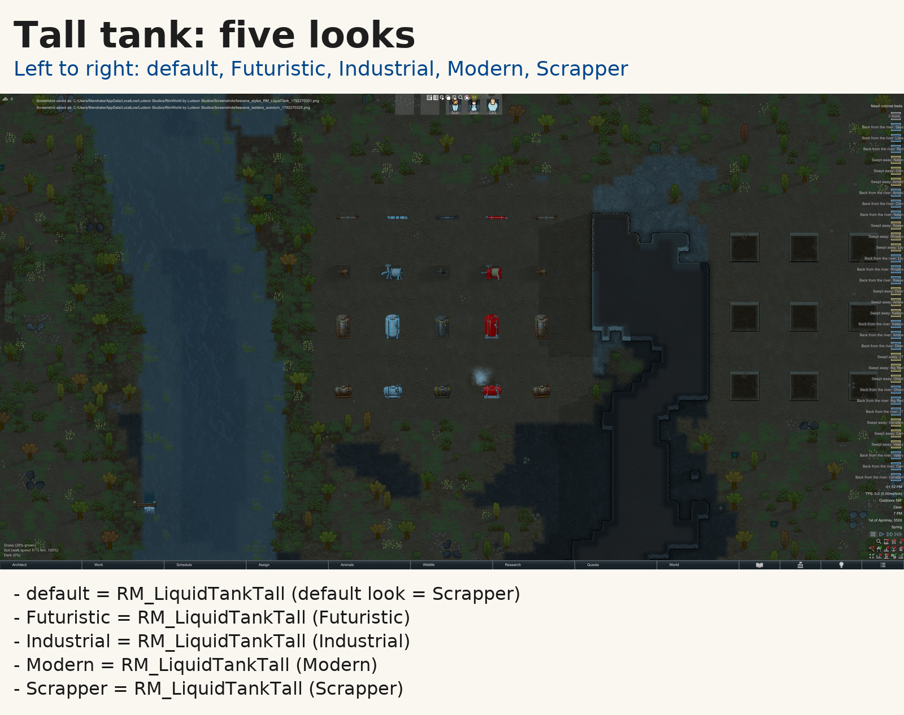
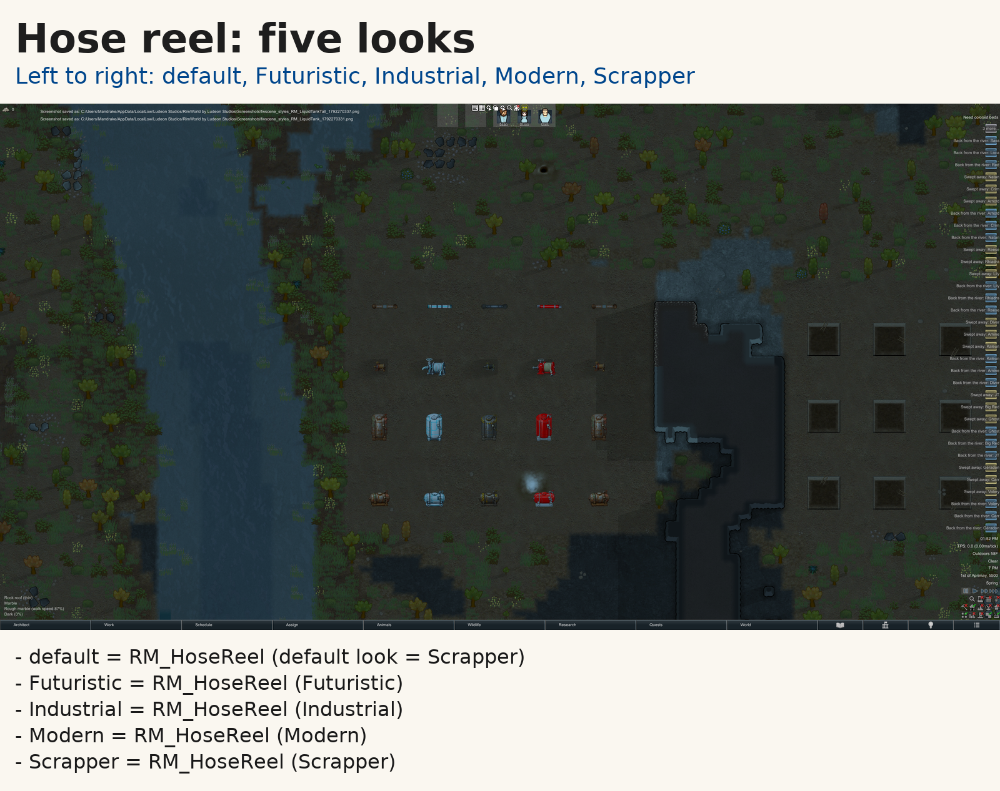
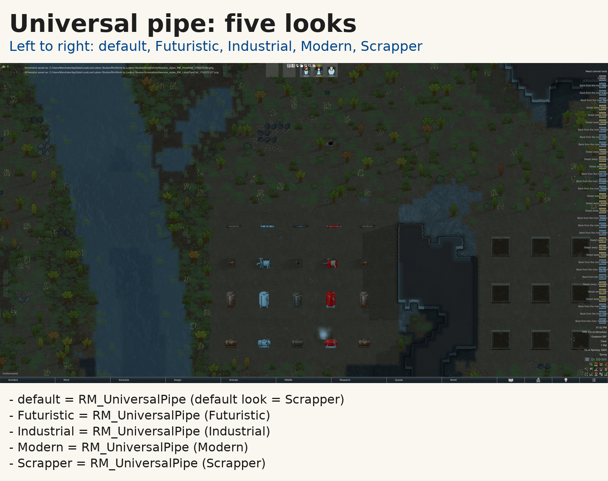
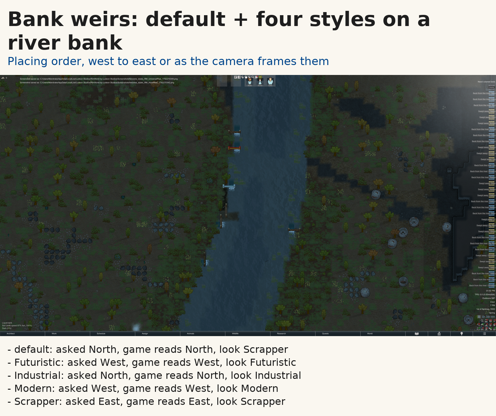
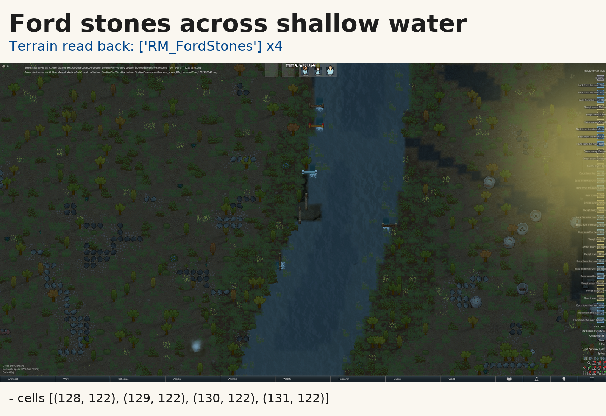

One picture per group, rotations read back from the game. Tick your answer under each group; 'Copy my answers as JSON' puts them on the clipboard.
What you are looking at. A 3x3 pit, 3 levels deep, per wall. A ladder hangs on the middle square of one wall, slid DOWN: drawn pressed against that wall.
What to check
Pass if: Every picture shows the ladder on the wall the caption names.
Fails if: A ladder drawn on the wrong side, floating, or turned away from its wall.
What the game measured
| MATCHES | North wall (cell 191,152): asked North -> game reads North |
| MATCHES | East wall (cell 198,151): asked East -> game reads East |
| MATCHES | South wall (cell 203,150): asked South -> game reads South |
| MATCHES | West wall (cell 208,151): asked West -> game reads West |

ladders_lowered: note:
What you are looking at. The same four pits, ladders slid UP onto the rim: drawn lying on the rim beyond the wall.
What to check
Pass if: Every picture shows the ladder on the wall the caption names.
Fails if: A ladder drawn on the wrong side, floating, or turned away from its wall.
What the game measured
| MATCHES | North wall (cell 191,159): asked North -> game reads North; raised=True |
| MATCHES | East wall (cell 198,158): asked East -> game reads East; raised=True |
| MATCHES | South wall (cell 203,157): asked South -> game reads South; raised=True |
| MATCHES | West wall (cell 208,158): asked West -> game reads West; raised=True |

raise (191, 159): LADDER cell=191,159 present=True raised=True inspect=Slid_up_onto_the_rim:_nobody_can_climb_down_or_
raise (198, 158): LADDER cell=198,158 present=True raised=True inspect=Slid_up_onto_the_rim:_nobody_can_climb_down_or_
raise (203, 157): LADDER cell=203,157 present=True raised=True inspect=Slid_up_onto_the_rim:_nobody_can_climb_down_or_
raise (208, 158): LADDER cell=208,158 present=True raised=True inspect=Slid_up_onto_the_rim:_nobody_can_climb_down_or_
ladders_raised: note:
What you are looking at. A ladder placed with its facing pointing INTO the pit (away from any wall).
What to check
Pass if: Every picture shows the ladder on the wall the caption names.
Fails if: A ladder drawn on the wrong side, floating, or turned away from its wall.
What the game measured
| MATCHES | North wall (cell 191,166): asked South -> game reads North |
| MATCHES | East wall (cell 198,165): asked West -> game reads East |
| MATCHES | South wall (cell 203,164): asked North -> game reads South |
| MATCHES | West wall (cell 208,165): asked East -> game reads West |

ladders_autoturn: note:
What you are looking at. Five tank, left to right: default, Futuristic, Industrial, Modern, Scrapper.
What to check
Pass if: Five distinct, readable looks.
Fails if: Two styles look alike, a style shows the default, or a picture is missing/placeholder.
What the game measured
| MATCHES | RM_LiquidTank default: 1 of 1 placed; game reads look default look = Scrapper |
| MATCHES | RM_LiquidTank Futuristic: 1 of 1 placed; game reads look Futuristic |
| MATCHES | RM_LiquidTank Industrial: 1 of 1 placed; game reads look Industrial |
| MATCHES | RM_LiquidTank Modern: 1 of 1 placed; game reads look Modern |
| MATCHES | RM_LiquidTank Scrapper: 1 of 1 placed; game reads look Scrapper |

styles_RM_LiquidTank: note:
What you are looking at. Five tall tank, left to right: default, Futuristic, Industrial, Modern, Scrapper.
What to check
Pass if: Five distinct, readable looks.
Fails if: Two styles look alike, a style shows the default, or a picture is missing/placeholder.
What the game measured
| MATCHES | RM_LiquidTankTall default: 1 of 1 placed; game reads look default look = Scrapper |
| MATCHES | RM_LiquidTankTall Futuristic: 1 of 1 placed; game reads look Futuristic |
| MATCHES | RM_LiquidTankTall Industrial: 1 of 1 placed; game reads look Industrial |
| MATCHES | RM_LiquidTankTall Modern: 1 of 1 placed; game reads look Modern |
| MATCHES | RM_LiquidTankTall Scrapper: 1 of 1 placed; game reads look Scrapper |

styles_RM_LiquidTankTall: note:
What you are looking at. Five hose reel, left to right: default, Futuristic, Industrial, Modern, Scrapper.
What to check
Pass if: Five distinct, readable looks.
Fails if: Two styles look alike, a style shows the default, or a picture is missing/placeholder.
What the game measured
| MATCHES | RM_HoseReel default: 1 of 1 placed; game reads look default look = Scrapper |
| MATCHES | RM_HoseReel Futuristic: 1 of 1 placed; game reads look Futuristic |
| MATCHES | RM_HoseReel Industrial: 1 of 1 placed; game reads look Industrial |
| MATCHES | RM_HoseReel Modern: 1 of 1 placed; game reads look Modern |
| MATCHES | RM_HoseReel Scrapper: 1 of 1 placed; game reads look Scrapper |

styles_RM_HoseReel: note:
What you are looking at. Five universal pipe, left to right: default, Futuristic, Industrial, Modern, Scrapper.
What to check
Pass if: Five distinct, readable looks.
Fails if: Two styles look alike, a style shows the default, or a picture is missing/placeholder.
What the game measured
| MATCHES | RM_UniversalPipe default: 3 of 3 placed; game reads look default look = Scrapper |
| MATCHES | RM_UniversalPipe Futuristic: 3 of 3 placed; game reads look Futuristic |
| MATCHES | RM_UniversalPipe Industrial: 3 of 3 placed; game reads look Industrial |
| MATCHES | RM_UniversalPipe Modern: 3 of 3 placed; game reads look Modern |
| MATCHES | RM_UniversalPipe Scrapper: 3 of 3 placed; game reads look Scrapper |

styles_RM_UniversalPipe: note:
What the game measured
| MATCHES | moving river water found |
river_prereq: note:
What you are looking at. Five bank weirs standing on the river's bank edge, left to right in placing order: default, Futuristic, Industrial, Modern, Scrapper.
What to check
Pass if: Five readable weirs on the bank, rotation as read.
Fails if: A weir floating in the river, facing land, or two styles alike.
What the game measured
| MATCHES | RM_BankWeir default at 128,122: asked North -> reads North; look Scrapper |
| MATCHES | RM_BankWeir Futuristic at 130,129: asked West -> reads West; look Futuristic |
| MATCHES | RM_BankWeir Industrial at 125,115: asked North -> reads North; look Industrial |
| MATCHES | RM_BankWeir Modern at 131,136: asked West -> reads West; look Modern |
| MATCHES | RM_BankWeir Scrapper at 141,121: asked East -> reads East; look Scrapper |

Weirs are spread at least 7 cells apart, so the camera may frame them small.
river_weirs: note:
What you are looking at. RM_FordStones (needs the RM_Fordable affordance, which only shallow moving water has) laid as a 4-square line across the shallows.
What to check
Pass if: Four ford squares visible in the shallows.
Fails if: No stones drawn, stones over deep water, or the water vanishes.
What the game measured
| MATCHES | top terrain read back at [(128, 122), (129, 122), (130, 122), (131, 122)]: ['RM_FordStones', 'RM_FordStones', 'RM_FordStones', 'RM_FordStones'] |

river_fords: note: